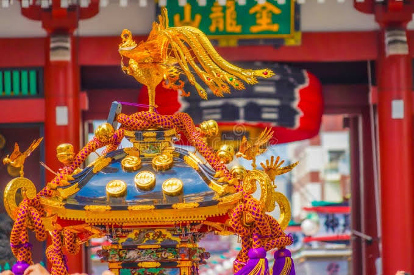

Mikoshi (神輿) พาหนะชั่วคราวของทวยเทพ

รากศัพท์และการประกอบคำ:ประกอบด้วยอักษรคันจิ 2 ตัว คือ Mi (神) ซึ่งในที่นี้เป็นคำยกย่องขั้นสูง แปลว่า เทพเจ้า หรือสิ่งศักดิ์สิทธิ์ และ Koshi (輿) แปลว่า เสลี่ยง, เกี้ยว หรือคานหามสำหรับเชื้อพระวงศ์ในอดีต รวมกันหมายถึง "เสลี่ยงประทับของพระผู้เป็นเจ้า" (บางครั้งเรียกว่า Shin-yo)
ความเป็นมาและมิติด้านประวัติศาสตร์:ปรากฏหลักฐานการใช้ Mikoshi ครั้งแรกในประวัติศาสตร์ญี่ปุ่นตั้งแต่ปี ค.ศ. 749 (ยุคนารา) ในคราวที่นิมนต์เทพเจ้าฮะจิมัง (Hachiman) จากศาลเจ้าอุสะ (จังหวัดโออิตะ) ไปยังวัดโทไดจิที่เมืองนารา เพื่อปกป้องการสร้างพระพุทธรูปองค์ใหญ่ (Daibutsu) ในยุคโบราณเกี้ยวนี้จะถูกปิดมิดชิดและเคลื่อนย้ายอย่างเงียบเชียบในเวลากลางคืน แต่เมื่อเข้าสู่ยุคกลางและยุคเอโดะ มันได้เปลี่ยนสถานะเป็นศูนย์กลางความบันเทิงของชุมชน ตัวเกี้ยวถูกตกแต่งอย่างหรูหราด้วยทองคำ งานแกะสลักไม้ นกฟีนิกซ์ (Ho-o) และผ้าม่านสีชาด
กลไกการใช้งานและหน้าที่ในงานเฟสติวัล: การย้ายสถิตของวิญญาณเทพ (Mitama-utsushi): ก่อนเริ่มงาน นักบวชจะดับไฟในศาลเจ้าแล้วทำพิธีอัญเชิญวิญญาณของเทพเจ้าออกจากอาคารหลักมาสถิตอยู่ในเกี้ยว Mikoshiการเขย่าเกี้ยว (Tama-furi): ในขณะแห่ คนแบกจะทำการโยก โยกเยก หรือเขย่าเกี้ยวอย่างรุนแรง เชื่อว่าการเขย่าจะทำให้พลังของเทพเจ้าตื่นตัวและแผ่บารมีออกมาได้ มากขึ้นเป้าหมายของการสาดน้ำ: ในเทศกาลสาดน้ำ Mikoshi ถือเป็นจุดศูนย์รวมสูงสุด ตัวเกี้ยวจะถูกสาดน้ำจนเปียกชุ่มโชก เพราะเชื่อว่าน้ำจะช่วยดับความโกรธของเทพเจ้าและเปลี่ยนเป็นความร่มเย็นเป็นสุขให้แก่เมืองนั้นๆ